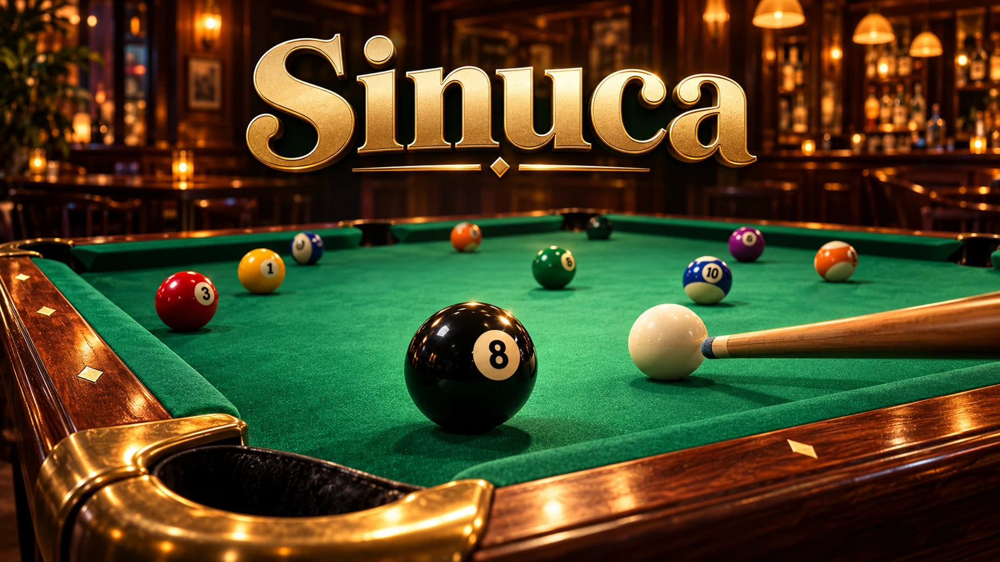
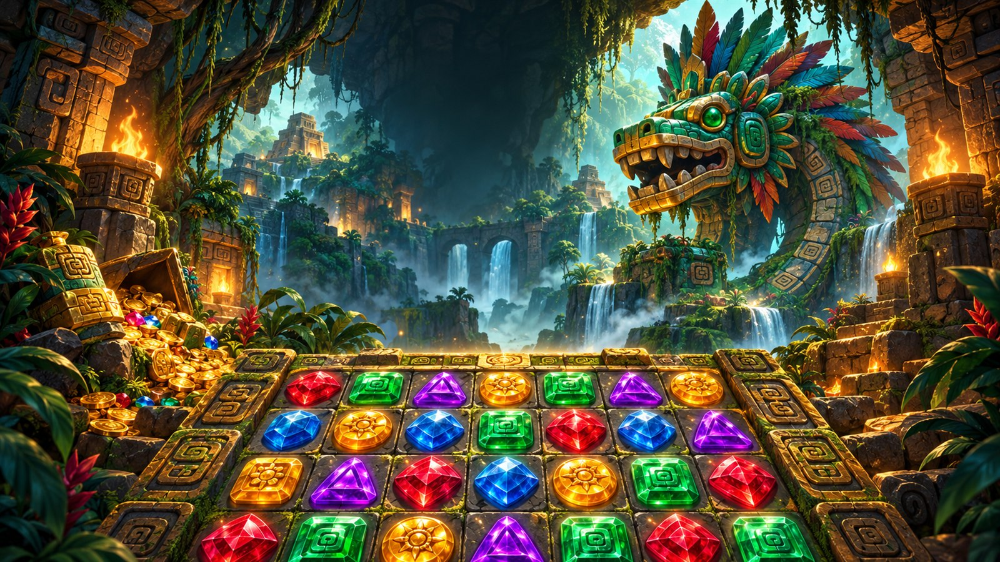

Sinuca
8-ball com física realista.
Grátis, no navegador. Sem instalar, sem cadastro.

Cobrinha arcade em 5 fases.

Combine joias num templo perdido.

8-ball com física realista.
Uma cobrinha arcade em que o mundo começa cinza e ganha cor a cada cogumelo. Cinco fases com perigos diferentes (flechas, morcegos, rochas e o caos de tudo junto), combos, desafio do dia e modo treino. Controle por deslize no celular ou setas no teclado.
Como jogar Neon Snake ›Combine joias num templo perdido na selva: 86 fases em quatro mundos, metas variadas, joias especiais, aranha, sapo, jiboia, loja de itens, Jogada do Dia e recordes Difíceis semanais. É só arrastar uma joia para trocar de lugar.
Como jogar Lost Relics › English guide ›Uma partida de 8-ball para computador, com treino contra o bot e dois jogadores no mesmo PC. A versão jogável ainda está em desenvolvimento.
O Oddloom Games faz jogos grátis para o navegador: partidas curtas, nada para instalar e nenhum cadastro. Funcionam no celular e no computador. O site pode exibir anúncios, sempre fora da partida. Saiba mais sobre o Oddloom Games.